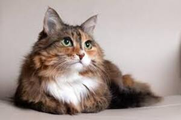

Um gatinho persa de olhos verdes é uma verdadeira preciosidade! Os olhos verdes contrastam lindamente com a pelagem exuberante e sedosa dos gatos persas, criando um visual deslumbrante. Além disso, os gatos persas são conhecidos por sua personalidade tranquila e afetuosa, tornando-os companheiros adoráveis. Quem adotar esse gatinho estará levando para casa um amigo elegante e carinhoso.

voltar para principal